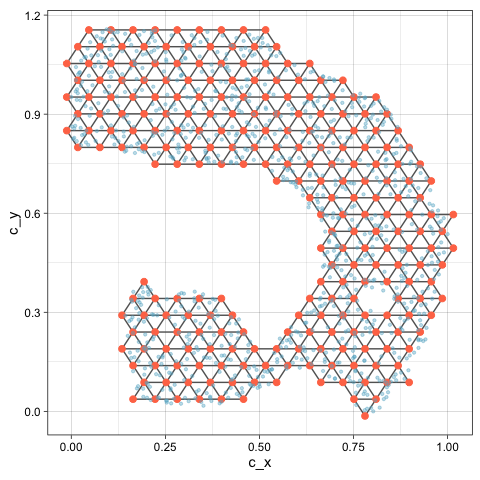
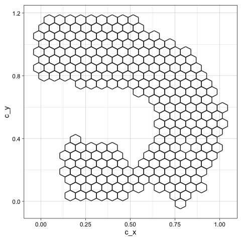

What does quollr do?
Nonlinear dimension reduction (NLDR) methods like UMAP and tSNE can
produce very different layouts of the same data depending on method and
hyper-parameter choices. Choosing poorly can lead to misleading
conclusions, such as spurious clusters or artificial separations between
groups. quollr helps you assess which layout most
faithfully represents the original high-dimensional structure. It does
this by fitting a wireframe model in 2-D and lifting it back into
high-dimensional space, where you can inspect it directly using a tour.
The result is both a visual diagnostic and a quantitative
goodness-of-fit metric (hexbin error, HBE).
Your inputs
The package requires two data objects in a specific format.
library(quollr)
# High-dimensional data: must have an ID column and variables prefixed with x
head(scurve, 3)
#> # A tibble: 3 × 8
#> x1 x2 x3 x4 x5 x6 x7 ID
#> <dbl> <dbl> <dbl> <dbl> <dbl> <dbl> <dbl> <int>
#> 1 -0.120 0.819 -1.99 0.0114 0.00351 0.0334 0.00638 1
#> 2 -0.0492 0.166 0.00121 0.0115 -0.0166 -0.0297 0.00509 2
#> 3 -0.774 0.651 0.367 -0.0172 0.00600 0.0211 0.00303 3
# 2-D NLDR embedding: must have ID, emb1, and emb2 columns
head(scurve_umap, 3)
#> # A tibble: 3 × 3
#> emb1 emb2 ID
#> <dbl> <dbl> <int>
#> 1 -4.24 5.80 1
#> 2 3.19 -0.851 2
#> 3 4.65 -3.31 3The ID column links the two datasets. High-dimensional
variables must be prefixed with x (e.g. x1,
x2, …). The embedding columns must be named
emb1 and emb2.
Fit the model in one step
The main entry point is fit_highd_model(), which runs
the complete pipeline — scaling, hexagonal binning, centroid
triangulation, and lifting into high dimensions — in a single call.
model <- fit_highd_model(
highd_data = scurve,
nldr_data = scurve_umap,
b1 = 21,
q = 0.1,
hd_thresh = 0
)The returned object contains everything needed for visualisation and diagnostics:
-
model$model_2d— 2-D bin centroids -
model$model_highd— high-dimensional bin averages -
model$trimesh_data— triangular mesh edges -
model$hb_obj— hexagonal bin configurations -
model$nldr_scaled_obj— scaled embedding
For a step-by-step explanation of each stage, see
vignette("quollr2dataprocessing") through
vignette("quollr3hexbin") and
vignette("quollr4algo").
Inspect the model in 2-D
The triangular mesh overlaid on the NLDR layout shows how the hexagonal bins are connected. Gaps in the mesh indicate sparse regions in the embedding.
library(ggplot2)
ggplot() +
geom_trimesh(
data = model$model_2d,
aes(x = c_x, y = c_y)
) +
geom_point(
data = model$nldr_scaled_obj$scaled_nldr,
aes(x = emb1, y = emb2),
alpha = 0.4, size = 0.8, colour = "#66B2CC"
) +
theme_linedraw() +
theme(aspect.ratio = 1)
You can also visualise only the hexagonal bins that contain data
using geom_hexgrid():
ggplot() +
geom_hexgrid(
data = model$model_2d,
aes(x = c_x, y = c_y)
) +
theme_linedraw() +
theme(aspect.ratio = 1)
Lift into high dimensions
To inspect how well the 2-D layout preserves the high-dimensional structure, combine the data and model, then view in a tour.
df <- comb_data_model(
highd_data = scurve,
model_highd = model$model_highd,
model_2d = model$model_2d
)
# Interactive tour — run this in your R session
show_langevitour(
point_data = df,
edge_data = model$trimesh_data
)Rotating the tour reveals whether the wireframe traces the true shape
of the data in high dimensions. A well-fitted model will follow the data
cloud closely across many projection angles. For guidance on
interpreting the tour, see vignette("quollr4algo").
Evaluate the fit with HBE
HBE (hexbin error) summarises how well the 2-D layout preserves the high-dimensional structure as a single number — the root mean squared error between the original data and the lifted model.
glance(x = model, highd_data = scurve)
#> # A tibble: 1 × 2
#> Error HBE
#> <dbl> <dbl>
#> 1 196. 0.116For point-level diagnostics (residuals per observation), use
augment():
errors <- augment(x = model, highd_data = scurve)
head(errors[, c("ID", "row_wise_abs_error", "row_wise_total_error")], 5)
#> # A tibble: 5 × 3
#> ID row_wise_abs_error row_wise_total_error
#> <int> <dbl> <dbl>
#> 1 1 0.210 0.0147
#> 2 2 0.0955 0.00246
#> 3 3 0.231 0.0128
#> 4 4 0.206 0.0105
#> 5 5 0.237 0.0142Comparing HBE across methods and bin widths helps identify the layout
that most faithfully represents the data. See
vignette("quollr6bestbinwidth") for guidance on choosing
the bin width, and vignette("quollr7bestfit") for a full
comparison across NLDR methods.
Linked interactive plots
For deeper diagnostics, quollr provides interactively
linked plots that connect the 2-D layout, the high-dimensional tour, and
the residual distribution. Brushing in any panel highlights the
corresponding points in all other panels.
# Prepare combined data including NLDR coordinates
df_all <- comb_all_data_model(
highd_data = scurve,
nldr_data = scurve_umap,
model_highd = model$model_highd,
model_2d = model$model_2d
)
show_link_plots(
point_data = df_all,
edge_data = model$trimesh_data,
point_colour = "#66B2CC"
)Where to go next
| Vignette | Topic |
|---|---|
vignette("quollr2dataprocessing") |
Data preprocessing and scaling |
vignette("quollr3hexbin") |
Hexagonal binning in detail |
vignette("quollr4algo") |
Full pipeline and tour interpretation |
vignette("quollr5summary") |
Model summaries and residuals |
vignette("quollr6bestbinwidth") |
Choosing the optimal bin width |
vignette("quollr7bestfit") |
Comparing NLDR methods with HBE |
vignette("quollr8linkeddetourr") |
Linked plots with detourr
|